일일 안전 리포트
매일의 위험 감지·조치 이력을 유형별·시간대별로 자동 정리해 보고서로 생성합니다.
- 탐지 건수·유형별 분류
- 조치 완료·미완료 현황
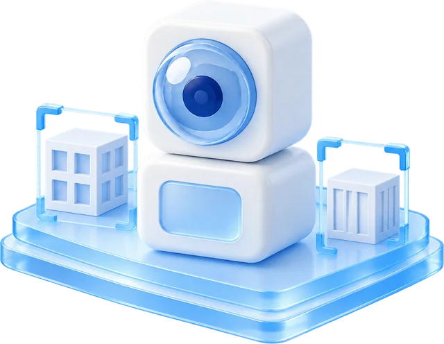
Products
현장을 살피고, AI로 판단하는 건설현장 Edge AI 솔루션
AUTO PTZ
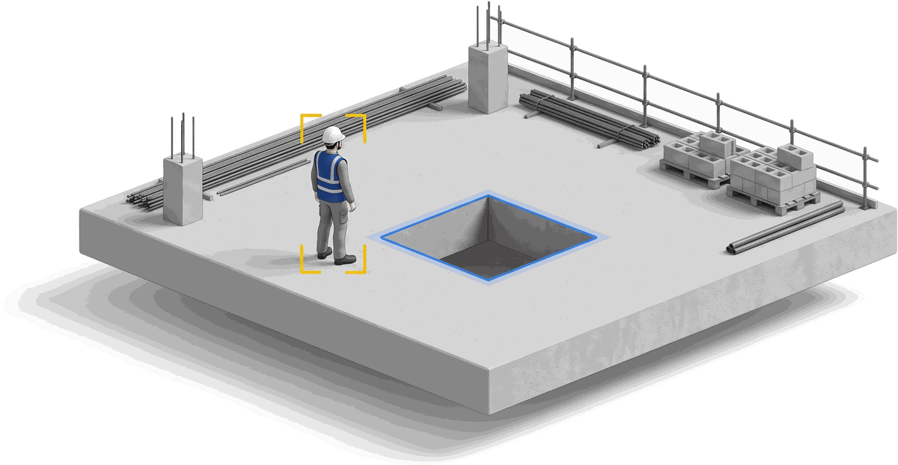
사람 · 관심영역을 찾아
위험 상황을 인식합니다.
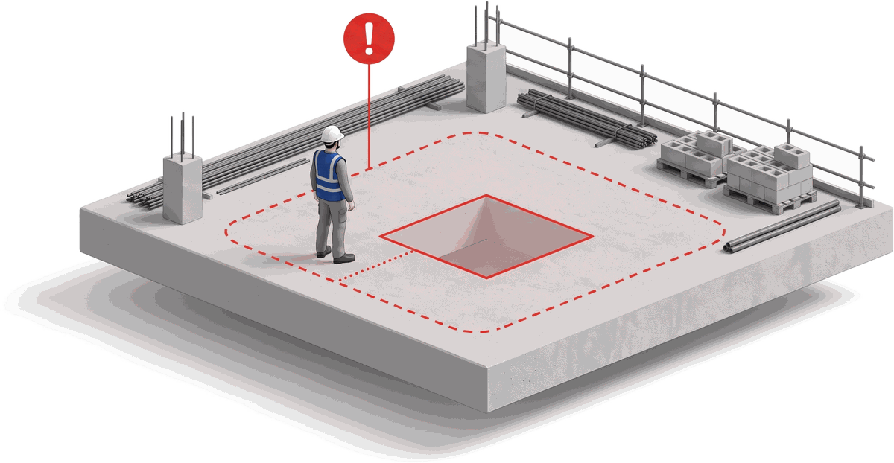
확인이 필요한 상황인지
AI가 판단합니다.
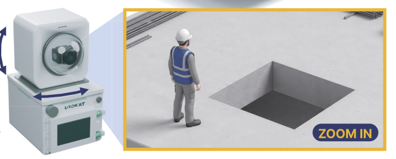
PTZ 카메라가 필요한
위치로 자동 이동합니다.
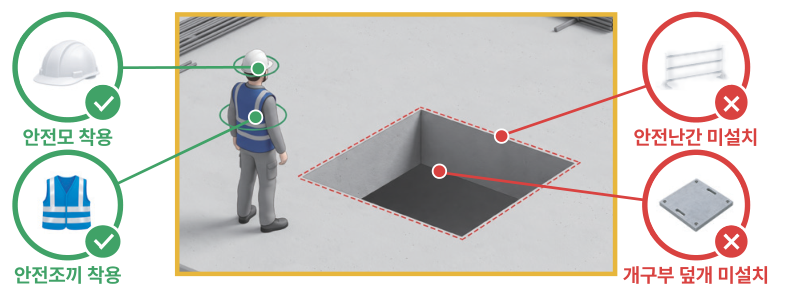
회전 · 확대하여 상황을
상세하게 확인합니다.
생성형 AI 기반 법령 매칭
단순 이벤트 감지에 머무르던 지능형 CCTV를 넘어,
상황을 이해하고 스스로 행동하는 관제 시스템으로 진화합니다.
다양한 상황을 감지하여 더 안전한 현장을 만듭니다.
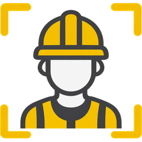
보호구 착용 등
작업자 위험 상황 확인
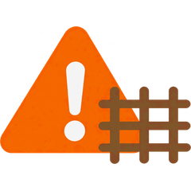
지정 위험구역의
접근 상황 확인
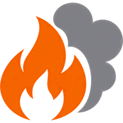
화재 및 연기 등
이상 징후 확인
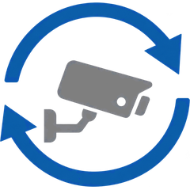
설정된 주기에 따라
주요 구역 확인
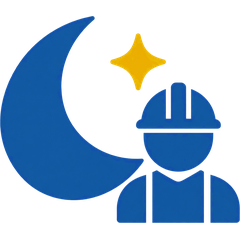
작업 종료 후
잔류 인원 확인
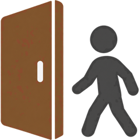
출입통제 구역의
외부 인원 확인
필요한 만큼, 더 스마트하게. 현장에 최적화된 구성을 제안합니다.
| 구분 | BASIC | EDGE + | EDGE PRO |
|---|---|---|---|
| 제품 이미지 | 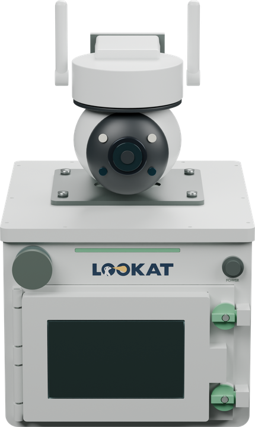 |
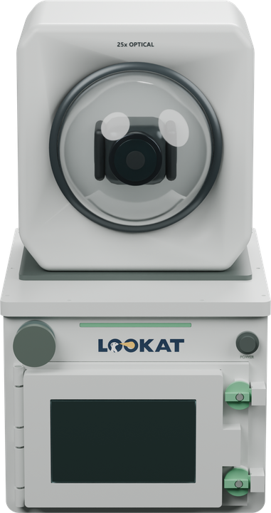 |
|
| 기본형 팬·틸트 · 디지털 줌 |
기본형 팬·틸트 · 디지털 줌 |
고급형 팬·틸트·줌 |
|
| SaaS | Edge | Edge | |
| 4 | 8 | 16 |
추가 옵션
질문을 누르면 자세한 내용을 볼 수 있습니다.
A분석용 PC 없이 장비 한 대에서 AI가 바로 분석하고(Edge AI), 카메라가 필요한 곳으로 스스로 회전 · 확대해 확인합니다(AUTO PTZ). 장비 구성을 간소화해 도입 비용 부담을 줄입니다.
기존 CCTV
분석을 위한 추가 장비가 필요합니다.
※ 이동형 CCTV + 분석용 PC 별도 구성 시 일반적인 예시입니다.
하나의 장비로, 현장에서 바로 AI 분석이 가능합니다.
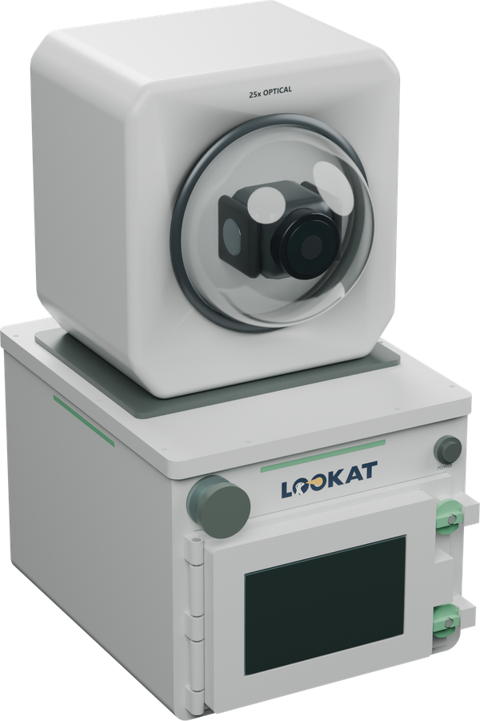
기존 CCTV
보이는 영역만 확인
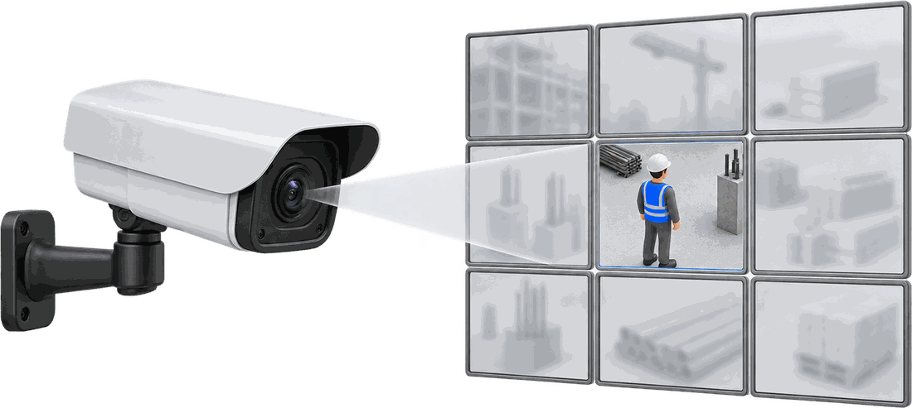
한정된 시야
AUTO PTZ
필요한 곳으로 회전·확대
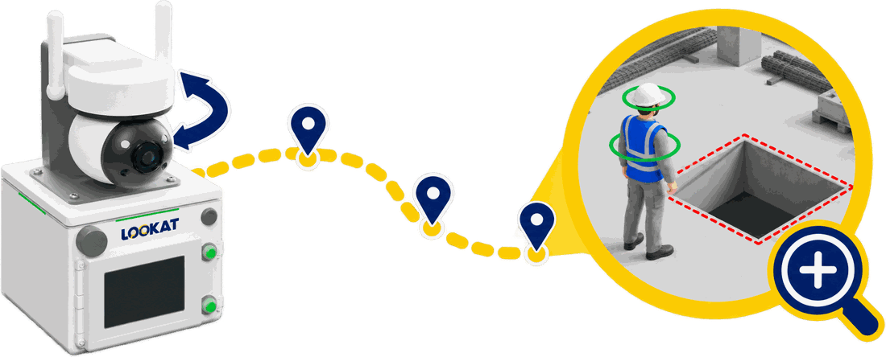
찾고, 움직여, 정확히 확인
A실시간 AI 위험 감지 · 판단, PTZ 자율 제어, 생성형 AI 기반 안전 서류 · 법령 자동화, 현장 맞춤형 지속 학습 — 4가지 방법으로 현장을 지킵니다.
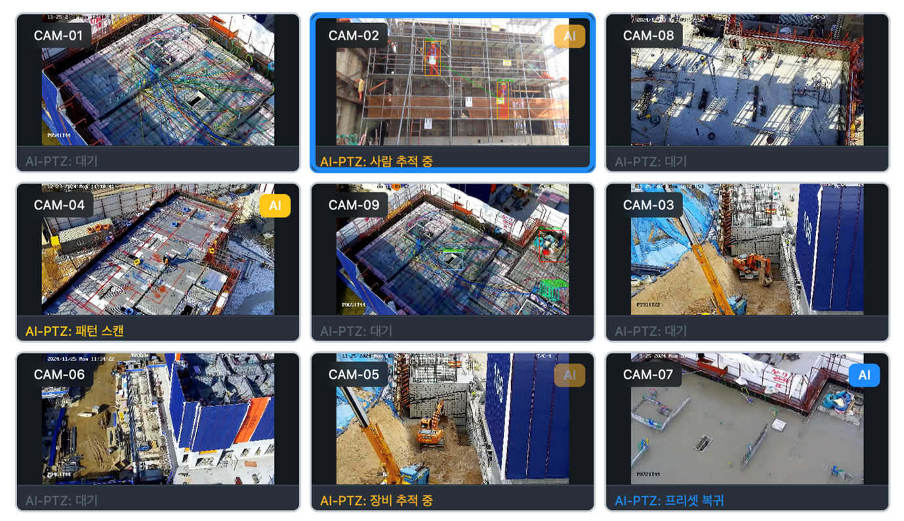
CCTV 영상을 실시간 분석해 현장 위험을 감지하고, 맥락까지 판단합니다.
주요 위험 유형
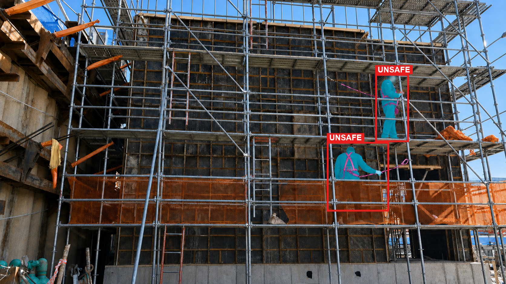
안전모 미착용
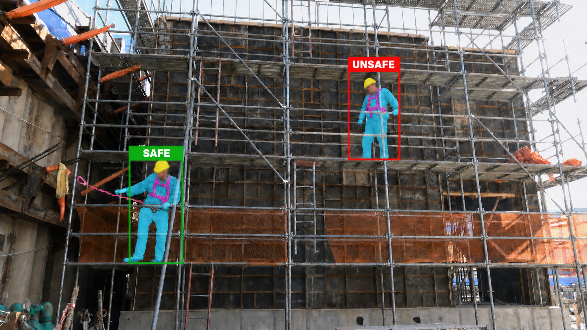
안전대 미착용
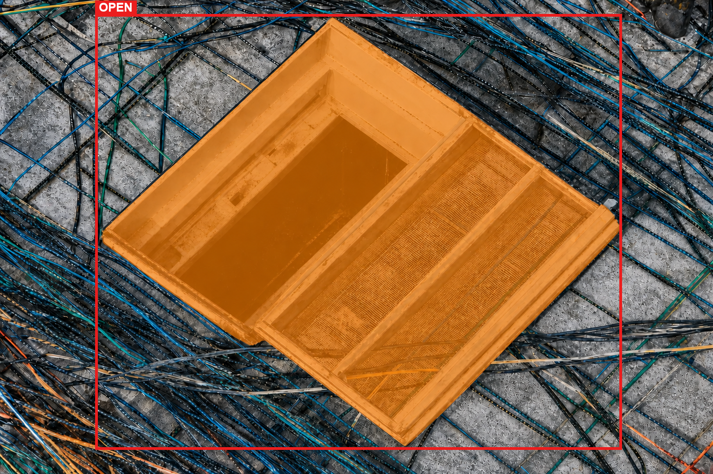
개구부 안전조치
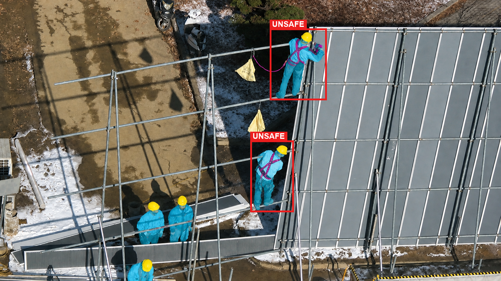
상하동시작업
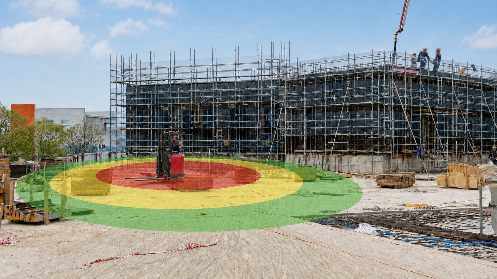
중장비 위험구역
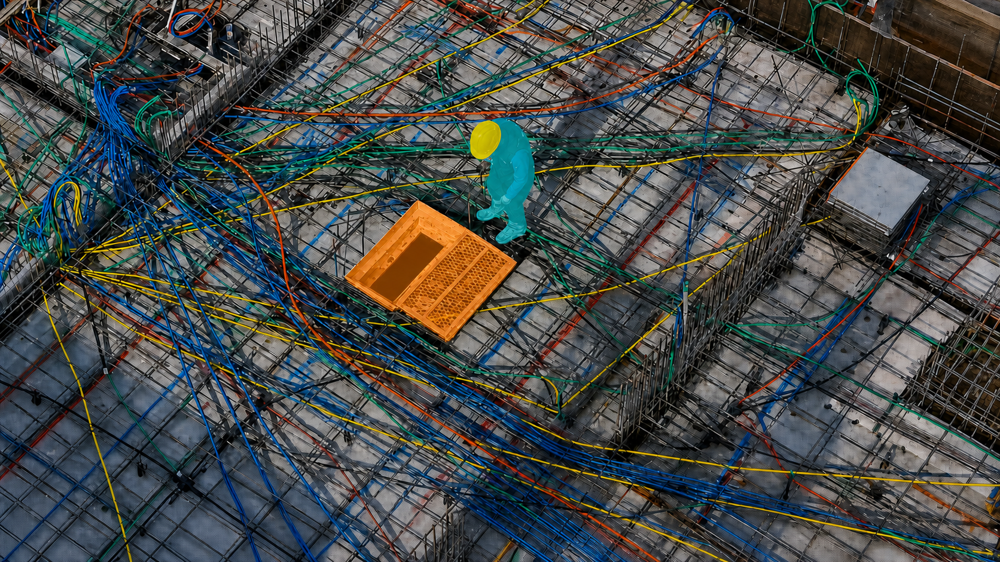
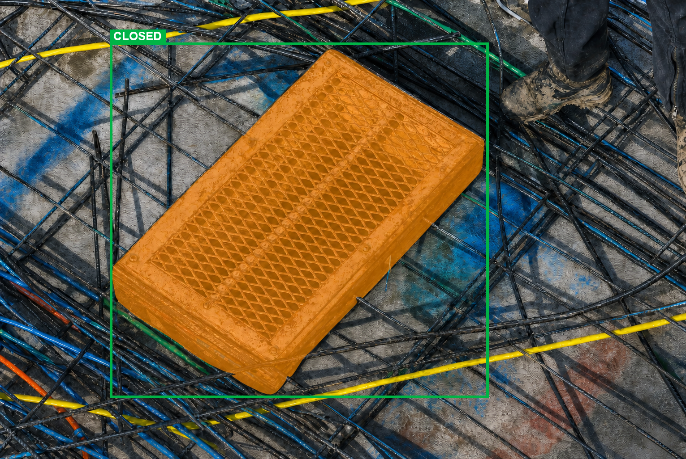
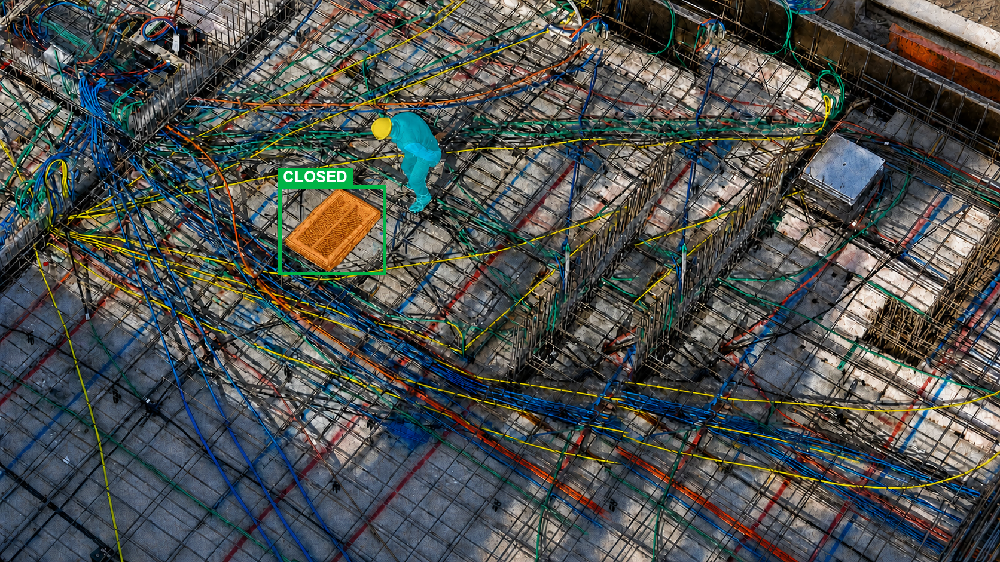
01AI 감지 · 픽셀 영역 분리
02위험 판별 · PTZ 줌인
03현장 · 관제 알림 발송
04PTZ 줌아웃 · 정상 복귀
감지부터 조치 확인까지, PTZ가 스스로 화각을 옮기며 따라갑니다.
위험을 감지하면 카메라가 스스로 움직여 사각지대까지 추적합니다.
감지에서 끝나지 않고, 법령 매칭부터 안전서류생성까지 처리합니다.
규정 매칭 실제 사례
현장 데이터
모델 학습
피드백 반영
감지 · 판단
같은 알람이 반복되면 기준을 조정하고, 놓친 위험은 다음 학습에 반영합니다.
현장 데이터와 피드백으로 계속 학습해, 쓸수록 우리 현장에 정교해집니다.
A감지로 끝나지 않고 기록으로 남습니다. 일일 안전 리포트, 현장 맞춤 교육자료, 법적 증빙 서류로 정리됩니다.
매일의 위험 감지·조치 이력을 유형별·시간대별로 자동 정리해 보고서로 생성합니다.
우리 현장의 실제 위험 장면과 관련 법령을 엮어, 작업자 맞춤 안전교육 자료를 만들 수 있습니다.
감지부터 조치까지 전 과정을 타임스탬프와 함께 기록해, 점검·감사·중대재해법 대응 시 증빙으로 씁니다.